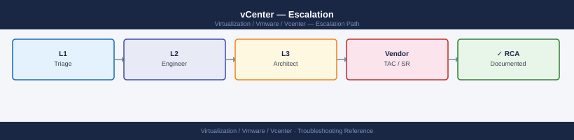

vCenter — Escalation¶

Before you begin¶
- Access required: SSH to VCSA (root credentials); vSphere Client access; Broadcom support account with entitlement to vSphere
- Do this first: collect all data below before touching the VCSA. Broadcom will ask for the bundle and logs in their first response
- Do NOT reboot the VCSA mid-incident unless explicitly instructed. A reboot may rotate logs and lose the state captured at the time of failure
- Do NOT snapshot the VCSA appliance during an active upgrade — this is unsupported and blocks the upgrade from completing
Pre-Escalation Self-Check¶
Run these before opening the SR. Many vCenter issues are resolvable without Broadcom.
| Check | Command / location | Expected result |
|---|---|---|
| vCenter UI accessible | Browse to https://<vcenter-fqdn>/ui/ |
Login page loads |
| VCSA services status | SSH → service-control --status |
All services show Running |
| vpxd service | SSH → service-control --status vmware-vpxd |
Running |
| SSO service | SSH → service-control --status vmware-sso |
Running |
| Embedded DB space | SSH → df -h /storage/db |
Under 70% used |
| Disk space overall | SSH → df -h |
No partition at 100% |
| vCSHA status (if configured) | vSphere Client → vCenter HA | Active node healthy |
| Recent vpxd errors | SSH → grep ERROR /var/log/vmware/vpxd/vpxd.log | tail -20 |
Review for known error strings |
| NTP sync | SSH → timedatectl status |
System clock synchronized: yes |
Step-by-Step Data Collection¶
Run all of these before opening the SR. SSH to the VCSA as root.
1. Get the vCenter version and build number¶
# SSH to vCenter Shell
ssh root@<vcenter-fqdn>
# Full vCenter version — include this in the SR description
cat /etc/applmgmt/appliance/update_status.json | python3 -m json.tool | grep -i version
# Or from VAMI (vCenter Appliance Management UI at port 5480):
# Login → Summary → Software Version — note the full build number (7 digits)
# Via vSphere Client: Administration → Deployment → System Configuration → Nodes → select vCenter → Summary
root@vcenter.corp.local's password:
"version": "7.0.3.00000",
"build": "19234567",
"releaseDate": "2024-01-15",
"productName": "VMware vCenter Server",
"productVersion": "7.0.3"
Common errors
Permission denied (publickey,password). — Verify the root account is enabled in vCenter and the SSH service is running; check /etc/ssh/sshd_config for PermitRootLogin yes.
cat: /etc/applmgmt/appliance/update_status.json: No such file or directory — This file path is specific to vCenter appliance deployments; if using a Windows vCenter Server installation, SSH into the appliance management interface or use the vSphere Client GUI instead.
python3: command not found — Use python instead of python3, or pipe to jq if available: cat /etc/applmgmt/appliance/update_status.json | jq '.version'.
2. Collect the VCSA support bundle (takes 5–20 minutes)¶
# Generate support bundle — run from VCSA shell
vc-support
# The bundle is saved to /var/core/
ls -lh /var/core/
# Example: vc-support-vcenter01-2026-06-14--15.45.tgz
# If /var/core/ is full:
vc-support -w /tmp/
Generating support bundle for vCenter Server Appliance...
Collecting system logs...
Collecting database information...
Collecting configuration files...
Bundle generation completed successfully.
Support bundle saved to: /var/core/vc-support-vcenter01-2026-06-14--15.45.tgz
total 2847M
-rw-r--r-- 1 root root 2.8G Jun 14 15:45 vc-support-vcenter01-2026-06-14--15.45.tgz
-rw-r--r-- 1 root root 1.2G Jun 13 09:22 vc-support-vcenter01-2026-06-13--09.22.tgz
-rw-r--r-- 1 root root 956M Jun 12 14:18 vc-support-vcenter01-2026-06-12--14.18.tgz
Common errors
ERROR: /var/core/ filesystem is full (0% available) — Run vc-support -w /tmp/ to write the bundle to an alternate location with available space.
ERROR: Permission denied writing to /tmp/ — Ensure you are running the command as root or with sudo, and verify /tmp has write permissions with chmod 1777 /tmp.
ERROR: Database connection failed — vCenter services may be down — Wait 2–3 minutes for vCenter services to fully initialize, then retry with vc-support.
Upload this .tgz file to the Broadcom case. It contains all VCSA service logs, database state, and configuration.
3. Collect the vpxd log (the primary vCenter daemon log)¶
# The most recent vpxd.log is the first file Broadcom requests
ls -lh /var/log/vmware/vpxd/
cp /var/log/vmware/vpxd/vpxd.log /tmp/vpxd-$(date +%Y%m%d).log
# Also collect the SSO log if login is failing
cp /var/log/vmware/sso/vmware-sts-idmd.log /tmp/vmware-sts-idmd-$(date +%Y%m%d).log
# For upgrade failures, collect the installer log
ls -lh /var/log/vmware/install/
total 2.4G
-rw-r--r-- 1 root root 847M Jan 15 10:23 vpxd.log
-rw-r--r-- 1 root root 512M Jan 14 18:45 vpxd.log.1
-rw-r--r-- 1 root root 256M Jan 13 22:10 vpxd.log.2
-rw-r--r-- 1 root root 128M Jan 12 15:33 vpxd.log.3
-rw-r--r-- 1 root root 64M Jan 11 09:15 vpxd.log.4
total 1.8G
-rw-r--r-- 1 root root 1.2G Jan 15 10:45 vmware-sts-idmd.log
-rw-r--r-- 1 root root 512M Jan 14 19:20 vmware-sts-idmd.log.1
-rw-r--r-- 1 root root 256M Jan 13 23:05 vmware-sts-idmd.log.2
total 3.6G
-rw-r--r-- 1 root root 2.1G Jan 15 08:30 vmware-installer.log
-rw-r--r-- 1 root root 1.5G Jan 14 12:15 vmware-installer.log.1
Common errors
cp: cannot create regular file '/tmp/vpxd-20250115.log': No space left on device — Check available disk space with df -h /tmp and either clean up /tmp or redirect to a partition with sufficient space.
cp: /var/log/vmware/sso/vmware-sts-idmd.log: No such file or directory — Verify the SSO service is installed and running with systemctl status vmware-sts-idmd, or check the correct log path for your vCenter version.
Permission denied — Run the commands with sudo or as root, since /var/log/vmware files are typically readable only by root.
4. Check VCSA disk space (a common cause of VCSA service failures)¶
# Full disk space check — flag any partition at or near 100%
df -h
# If /storage/log is full, clear old log archives
ls -lh /var/log/vmware/*/
# For persistent disk-full issues, check database logs
du -sh /storage/db/
Filesystem Size Used Avail Use% Mounted on
/dev/sda1 100G 87G 13G 87% /
/dev/sda2 500G 498G 2G 99% /storage/log
/dev/sdb1 2.0T 1.8T 200G 90% /storage/db
tmpfs 32G 1.2G 31G 4% /dev/shm
/dev/sdc1 1.0T 856G 144G 86% /storage/backup
total 2.4G
-rw-r--r-- 1 root root 512M Nov 15 10:23 vpxd.log
-rw-r--r-- 1 root root 384M Nov 14 18:45 vpxd.log.1
-rw-r--r-- 1 root root 256M Nov 13 09:12 vpxd.log.2
-rw-r--r-- 1 root root 128M Nov 12 14:33 vpxd.log.3
...
1.2T /storage/db/
Common errors
du: cannot access '/storage/db/': Permission denied — Run the command with sudo or as root to access the database directory.
ls: cannot open directory '/var/log/vmware/': No such file or directory — Verify the correct vCenter log path with find /var/log -type d -name vmware or check your vCenter installation directory.
5. Check service status and recent errors¶
# List all VCSA services and their state
service-control --status
# Show recent errors in the primary service log
grep -i "ERROR\|FATAL\|Exception" /var/log/vmware/vpxd/vpxd.log | tail -50
# If SSO/login is failing
grep -i "ERROR\|FATAL" /var/log/vmware/sso/vmware-sts-idmd.log | tail -30
# Database health check
/usr/lib/vmware-vpostgres/bin/psql -U vc -d VCDB -c "SELECT count(*) FROM vpx_task WHERE state = 'running';"
Service vmware-vpxd is running
Service vmware-vpostgres is running
Service vmware-sso is running
Service vmware-rhttpproxy is running
Service vmware-cm is running
Service vmware-cis-license is running
Service vmware-analytics is running
2024-01-15T09:42:31.847Z ERROR [vpxd] [140234567890] [vpxd.log] Failed to connect to inventory service: Connection timeout after 30s
2024-01-15T09:41:12.234Z FATAL [vpxd] [140234567890] [vpxd.log] Database connection pool exhausted, rejecting new connections
2024-01-15T09:39:45.123Z ERROR [vpxd] [140234567890] [vpxd.log] Task 'task-1234' failed: NFC connection lost to host esx-prod-01.lab.local
2024-01-15T09:38:22.456Z ERROR [vpxd] [140234567890] [vpxd.log] Unable to retrieve cluster configuration from host 192.168.1.45
2024-01-15T08:15:33.567Z ERROR [sso] [140123456789] [vmware-sts-idmd.log] LDAP bind failed for user administrator@vsphere.local: Invalid credentials
2024-01-15T08:14:12.234Z ERROR [sso] [140123456789] [vmware-sts-idmd.log] Token validation failed: Certificate expired on 2024-01-10
count
-------
12
(1 row)
Common errors
psql: could not connect to server: No such file or directory — Verify PostgreSQL is running with service-control --status vmware-vpostgres and restart if needed.
grep: /var/log/vmware/vpxd/vpxd.log: No such file or directory — Check log directory exists and VCSA services are initialized; if fresh install, wait 5 minutes for services to fully start.
ERROR: role "vc" does not exist — Ensure the VCDB database user exists by running /usr/lib/vmware-vpostgres/bin/psql -U postgres -c "SELECT * FROM pg_user WHERE usename='vc';" to verify.
6. Write the timeline¶
vCenter version: 8.0 U2c build 23477823
VCSA hostname: vcenter-01.corp.local
Issue first observed: 2026-06-14 14:30 UTC
Last known good state: 2026-06-14 10:00 UTC
Changes in the 24h before the issue:
- 09:30: vCenter 8.0 U2b → U2c upgrade initiated via VAMI
- 14:25: VAMI showed upgrade progress stalled at 70%
- 14:30: vpxd service stopped responding; vSphere Client shows "Connection refused"
Steps already taken:
- Checked /var/log/vmware/vpxd/vpxd.log: shows "vc-health: VCDB disk full"
- /storage/db is at 98% — cleared old task history
- Services still not running
Blast radius: all ESXi hosts show "Disconnected" in vSphere Client; VMs continue running
How to Open the SR on Broadcom Support Portal¶
-
Go to support.broadcom.com and sign in with your Broadcom account. If you do not have one: click Register and use your company email — entitlement is linked to your support contract.
-
Click Open a New Case in the top navigation.
-
Under Select Product Family, choose VMware vSphere.
-
Under Product, select VMware vCenter Server and pick your exact version from the drop-down.
-
Under Request Type, select Technical.
-
Under Severity, select:
- S1 — Critical: vCenter is completely inaccessible; all hosts show Disconnected; you cannot manage any VMs; no workaround
- S2 — Major: vCenter is partially accessible or repeatedly crashing; specific workflows (migration, provisioning) are broken but VMs are running
- S3 — Minor: Non-critical vCenter feature is broken (alarms, performance charts); management is possible; cluster is healthy
-
S4 — General: How-to, pre-check, or non-urgent configuration question
-
In the Summary field, write one sentence: product + symptom + scope. Example:
vCenter 8.0 U2c upgrade stalled at 70% since 14:25 UTC — vpxd stopped, all ESXi hosts showing Disconnected. -
In the Description field, paste:
- The vCenter version and full build number from Step 1
- The disk space output from Step 4
- The last 20 ERROR lines from vpxd.log from Step 5
- The timeline from Step 6
-
The current service-control --status output
-
Under Attachments, upload:
- The VCSA support bundle tgz from Step 2
- The vpxd.log copy from Step 3
-
The SSO log if login is failing
-
Click Submit. You will receive a case number by email immediately.
-
S1 only: the case confirmation page shows a regional phone number. Call it immediately:
- State "Severity 1 — vCenter is completely down" at the start of the call.
- Have SSH access to VCSA and the case number ready.
Escalation Path¶
Step 1 — Open case at support.broadcom.com with VCSA support bundle attached
↓
Step 2 — T1 support acknowledges and confirms bundle received (typically 30 min–4 hr)
↓
Step 3 — If no meaningful progress in 4 hours for S1 or 1 business day for S2:
→ Reply in the case: "Requesting T2 vCenter Senior Engineer assignment"
→ State: "Impact: [vCenter down / upgrade stalled / all hosts disconnected]"
↓
Step 4 — T2 vCenter SE is assigned; they will schedule a live Zoom/Webex session
→ Have SSH access to VCSA and VAMI (port 5480) ready for the call
↓
Step 5 — If T2 cannot resolve and issue requires appliance-level investigation:
→ T2 escalates to T3 (vCenter engineering) — you do not need to initiate this
↓
Step 6 — For vCenter data loss, SSO database corruption, or 24h+ with no resolution:
→ Request a Critical Situation (CritSit) engagement
→ Add to case: "Requesting CritSit — [reason: data loss / VCDB corrupted / 24h no progress]"
What NOT to Do¶
| Do NOT do this | Why | What to do instead |
|---|---|---|
| Reboot VCSA mid-incident | Rotates logs; loses the service state at time of failure | Capture full logs first; only reboot if GSS says it is safe |
| Snapshot VCSA during an active upgrade | Explicitly unsupported; blocks upgrade completion | Snapshot before starting the upgrade, not during |
| Modify vPostgres database directly (SQL) | Can corrupt the vCenter database | Let GSS guide any DB-level intervention |
| Apply patches mid-incident | Adds variables to an already-broken environment | Freeze all changes until resolution |
| Delete and re-register hosts | Loses distributed switch state and VM-to-host mappings | Document the disconnected state and wait for GSS guidance |
| Open multiple SRs for the same issue | Splits diagnostic context across cases | Add information to the existing case; use one case per incident |
Useful Commands for Case Updates¶
Paste these into case replies to show Broadcom the current state.
# VCSA service status — paste into every case update
service-control --status
# Most recent vpxd errors (last 50 lines of ERROR-level entries)
grep -i "ERROR\|FATAL" /var/log/vmware/vpxd/vpxd.log | tail -50
# Disk space (flag anything over 80%)
df -h
# NTP status
timedatectl status
# vCSHA status (if configured)
vcha-util status 2>/dev/null || echo "vCSHA not configured"
# Recent system logs
journalctl -n 100 --no-pager 2>/dev/null | tail -50
SERVICE STATUS
Service Running Enabled
vmon true true
vpxd true true
vsphere-ui true true
vsan-health true true
rhttpproxy true true
sps true true
psc true true
2024-01-15T09:47:32.891Z ERROR vpxd[7F2A4C1E] [Originator@6876 sub=Default] Failed to connect to inventory service: connection timeout after 30s
2024-01-15T09:48:15.442Z FATAL vpxd[7F2A4C1E] [Originator@6876 sub=Hostd] Host agent on esx-prod-04.lab.local unreachable
2024-01-15T09:49:02.156Z ERROR vpxd[7F2A4C1E] [Originator@6876 sub=VsanMgmt] VSAN cluster health check failed: quorum lost
2024-01-15T09:50:44.721Z ERROR vpxd[7F2A4C1E] [Originator@6876 sub=Default] License capacity exceeded: 512 VMs licensed, 518 running
Filesystem Size Used Avail Use% Mounted on
/dev/mapper/root_vol 100G 87G 13G 87% /
/dev/mapper/log_vol 50G 42G 8G 84% /var/log
/dev/mapper/db_vol 200G 156G 44G 78% /storage/db
tmpfs 16G 2.1G 14G 13% /dev/shm
Local time: Mon 2024-01-15 09:52:18 UTC
Universal time: Mon 2024-01-15 09:52:18 UTC
RTC time: Mon 2024-01-15 09:52:18 UTC
Time zone: UTC (UTC, +0000)
System clock synchronized: yes
NTP service: active
RTC in local TZ: no
VCHA Cluster Status: HEALTHY
Node Role: ACTIVE
Partner Node: vcsa-02.lab.local (192.168.1.52)
Last Heartbeat: 2024-01-15T09:52:10Z
Jan 15 09:51:42 vcsa-01 systemd[1]: Started VMware vCenter Server.
Jan 15 09:51:55 vcsa-01 vpxd[8234]: Inventory service initialized
Jan 15 09:52:03 vcsa-01 rhttpproxy[5621]: SSL handshake completed for client 192.168.1.100
Jan 15 09:52:10 vcsa-01 vcha-util[9876]: Heartbeat received from passive node
Jan 15 09:52:18 vcsa-01 kernel: audit: type=1400 audit(1705318338.123:456): apparmor="DENIED" operation="capable"
Common errors
grep: /var/log/vmware/vpxd/vpxd.log: No such file or directory — Verify vpxd service is running with
Support Portal and SLA Reference¶
| Severity | Definition | Initial Response SLA |
|---|---|---|
| S1 — Critical | vCenter inaccessible; all hosts disconnected; data at risk | 30 minutes (24×7) |
| S2 — Major | Key workflow broken; upgrade stalled; partial access only | 4 hours |
| S3 — Minor | Non-critical feature broken; management still possible | 1 business day |
| S4 — General | How-to, pre-check, documentation question | 2 business days |
Your support tier (Production, Premier, Mission Critical) may reduce these SLAs. Check your contract under My Entitlements at support.broadcom.com.
See also¶
Verify resolution¶
- vSphere Client loads the login page and you can authenticate successfully
- All ESXi hosts show "Connected" in the vSphere Client
- Run
service-control --statusand confirm all services showRunning - Run
df -hand confirm no partition is above 80% - Perform the action that was failing (vMotion a test VM, add a host, provision a VM) and confirm it succeeds
- Monitor the vSphere Client Alarms view for 15 minutes and confirm no new vCenter-related alarms